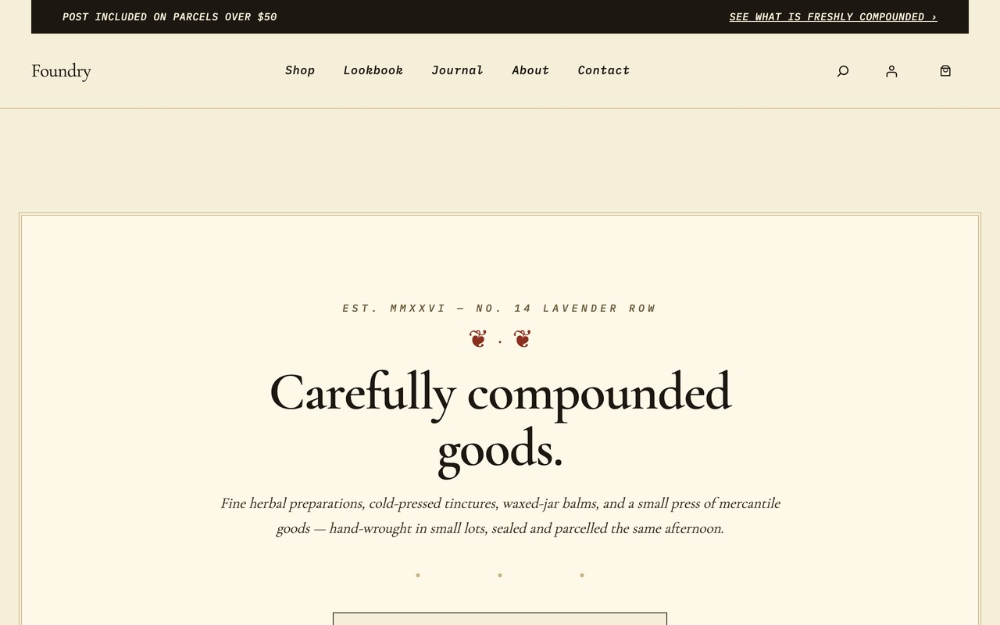
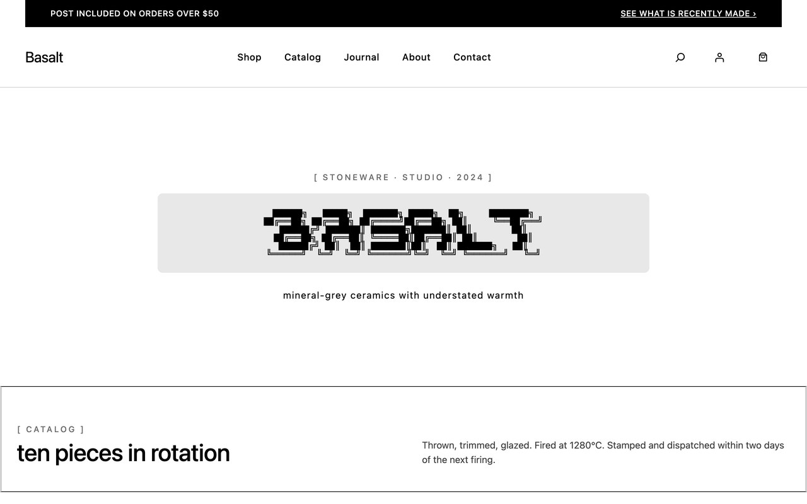

The visual contract
snap gallery.
The visual contract for every theme, at every viewport. Screenshots are baselined; any pixel diff turns CI red. This is how the agent ships designs that don’t quietly regress between sessions.



